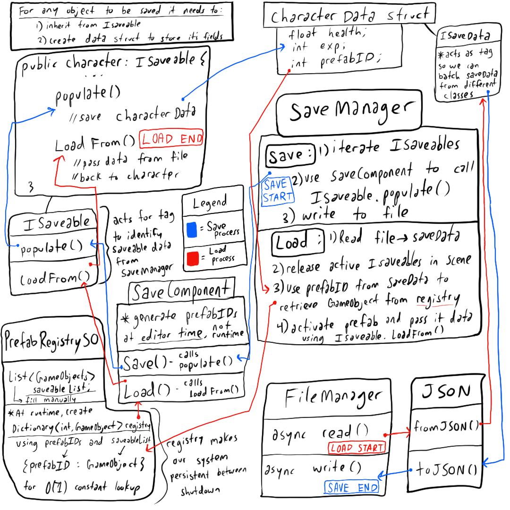

Full data flow diagram
Takeaways
Preliminary data structures
The first step in designing this system is to pick a file format for your data. I chose json for a number of reasons. Unity supports json serialization and can convert generic collections, such as Lists, to/from json very easily. This means I can batch our save/load process to/from one object. The batching becomes important when we start thinking about performance and file IO. As long as fields are public and our class/struct is marked with [System.Serializable], we should be able to save them. (Okay, there are a few exceptions here: ScriptableObjects only serialize a reference and any nested Lists/Arrays or Dictionaries will need a custom serialization callback). Firstly, each class with data fields that need to be saved will inherit a common interface, lets call it ISaveable. Each object that inherits ISaveable will have a struct containing the relevant data fields that need to be saved (for example: CharacterData, AudioData, InventoryData, etc). These structs will similarly inherit from a common interface that will act as a tag, lets call it ISaveData. ISaveable will enforce two methods: PopulateSavedata and LoadFromSaveData, and each class will use these for their specific data. For our examples, I will use a fake class called Character to save from and a struct called CharacterData to store fields. Here is the code we need to get started.
ISaveable.cs
public interface ISaveable {
ISaveData PopulateSaveData();
void LoadFromSaveData(ISaveData loadData);
}
ISaveData.cs
public interface ISaveData {}
PlayableCharacterData.cs
[Serializable]
public struct PlayableCharacterData : ISaveData
{
public SerializableTransform SerializedTransform;
public float Health;
public int Experience;
// more data fields to save/load
}
public static implicit operator PlayableCharacterData(Character currentCharacter)
{
PlayableCharacterData player = new PlayableCharacterData {
SerializedTransform = currentCharacter.transform,
Health = currentCharacter.health
Experience = currentCharacter.exp;
};
return player;
}
Saving
The process of collecting data will run as follows:
1) Iterate through ISaveables currently active in the scene (see SaveComponent.cs below).
2) Call PopulateSaveData() on each object.
3) When done collecting the data, write it to the save file.
Character.cs
public class Character : ISaveable
{
// data fields, initialization, AI, etc
//...
ISaveData PopulateSaveData()
{
PlayableCharacterData characterSave = this;
return characterSave;
}
void LoadFromSaveData(ISaveData loadData)
{
var chardata = (PlayableCharacterData)loadData.=;
transformRef = Deserialize(chardata.SerializedTransform);
health = chardata.Health;
exp = chardata.Experience;
// other fields to save
}
}
Async File IO
A few notes about IO and game engines should be mentioned. File operations cannot block the main thread or stop gameplay if unsuccessful. In order to ensure this, I made our FileManger class operate using async/await methods. This allowed me to run the IO without blocking execution. Passing a Cancellation Token handles the case where our file operation is unsuccessful and cancels it without breaking other parts of the game.
FileManager.cs
public class FileManager {
public static async Task WriteToFile(string path, string data, CancellationToken timeout)
{
byte[] result = Encoding.ASCII.GetBytes(data);
try {
using (FileStream fileWriter = File.Open(path, FileMode.OpenOrCreate) ) {
fileWriter.SetLength(0);
fileWriter.Position = 0;
await fileWriter.WriteAsync(result, 0, result.Length, timeout);
}
}
catch (Exception e ) {
#if UNITY_EDITOR
Debug.LogError($"Failed to write to {path} with exception {e.Message}");
#endif
}
}
}
public static async Task<string> LoadFromFile(string FullPath, CancellationToken cancelToken)
{
byte[] result;
string fileOutput = "";
try {
using ( FileStream fileReader = File.Open(FullPath, FileMode.Open) ) {
result = new byte[fileReader.Length];
await fileReader.ReadAsync(result, 0, (int)fileReader.Length, cancelToken);
fileOutput = Encoding.ASCII.GetString(result);
return fileOutput;
}
}
catch ( Exception e ) {
#if UNITY_EDITOR
Debug.LogError($"Failed to read from {FullPath} with exception {e.Message}");
#endif
}
return fileOutput;
}
Prefab IDs
So far, we are able to collect data from objects in our scene and save their data to file. The next piece to consider, is that in order to pass a chunk of data back to the correct object, we need a data mapping schema. I decided to handle this issue by creating an ID for each Prefab during editor time. Each prefab that will need to be saved will have a SaveComponent attached to it.
SaveComponent.cs
[Serializable]
public SaveComponent : MonoBehaviour {
[SerializeField] private uint _prefabID;
public uint PrefabID => _prefabID;
private bool NeedPrefabIDGenerated => this._prefabID == 0;
#if UNITY_EDITOR
public static void InitSaveSystemPrefabIDs(string[] _folders) {
string[] guids = AssetDatabase.FindAssets("t:Object", _folders);
for ( int i = 0; i < guids.Length; ++i ) {
string path = AssetDatabase.GUIDToAssetPath(guids[i]);
SaveSystemComponent loadedObject = (SaveSystemComponent)AssetDatabase.LoadAssetAtPath(path, typeof(SaveSystemComponent));
if ( loadedObject != null ) {
if ( loadedObject.NeedPrefabIDGenerated ) {
GeneratePrefabID(i, loadedObject);
}
}
}
}
#endif
private static void GeneratePrefabID(int i, SaveComponent componentID)
{
componentID._prefabID = Convert.ToUInt32(i + 1);
}
}
We iterate through the prefabs in our file system using the AssetDatabase and check to see if any prefabs do not have an ID component. We also need a data structure that contains all the {prefabID:gameObject} mappings. A ScriptableObject should work nicely, lets call it PrefabRegistrySO. We will need to manually add each GameObject prefab to our registry. Since we cannot serialize a Dictionary in the Unity Inspector window, we use a list of GameObjects and create our Dictionary mapping at runtime.
PrefabRegistrySO.cs
[CreateAssetMenu(fileName = "NewPrefabRegistry", menuName = "SaveSystem/PrefabRegistry")]
public class PrefabRegistrySO : ScriptableObject {
[SerializeField]
public List<GameObject> ListOfSaveablePrefabs = new List<GameObject>();
public static Dictionary<uint, GameObject> PrefabIDMapping = new Dictionary<uint, GameObject>();
private void OnEnable()
{
ListToDictionary();
}
public void ListToDictionary()
{
for ( int i = 0; i < ListOfSaveablePrefabs.Count; ++i ) {
GameObject prefabGameObject = ListOfSaveablePrefabs[i];
SaveSystemComponent saveSystemUniqueID = prefabGameObject.GetComponent<SaveSystemComponent>();
if ( saveSystemUniqueID == null ) {
#if DEBUG
Debug.LogError($"Object: {prefabGameObject.name} does not have a save component attached");
#endif
continue;
}
else if ( saveSystemUniqueID.PrefabID == 0 ) {
#if DEBUG
Debug.LogError($"Object: {prefabGameObject.name} does not have a unique Prefab ID");
#endif
continue;
}
else if ( !PrefabIDMapping.ContainsKey(saveSystemUniqueID.PrefabID) ) {
PrefabIDMapping.Add(saveSystemUniqueID.PrefabID, prefabGameObject);
}
}
}
}
Data Persistence
The next hurdle is to think about how to design our system to be persistent between sessions. Luckily, our Prefab ID comes in handy for this issue as well. We can activate prefabs (using object pooling), based on their IDs and simply pass data back to each object in the same order they were saved. Now we will add a PersistentObject class to hold IDs and save data, and then call Save/Load on the SaveComponents themselves rather than in the Character class. This decouples the actual saving and loading code from any specific game object or class and abstracts it into a separate component. Here we are iterating through ISaveables and calling PopulateSaveData/LoadFromSaveData on each one. PersistentObject.cs
[Serializable]
public class PersistentObject {
public uint PrefabID;
public ISaveData[] saveDatas;
}
SaveComponent.cs
public class SaveComponent {
// Continued from above...
// Code to Generate prefab ID
private ISaveable[] _saveables;
private void Awake()
{
_saveables = GetComponents<ISaveable>();
}
public ISaveData[] Save()
{
ISaveData[] saveDatas = new ISaveData[_saveables];
ISaveable[] saveables = _saveables;
for (int i = 0; i < saveables.Length; ++i)
{
var saveableInstance = saveables[i];
saveDatas[i] = saveableInstance.PopulateSaveData();
}
}
public void Load(PersistentObject saveData)
{
ISaveable[] saveables = _saveables;
for (int i = 0; i < _saveables.Length; ++i)
{
var saveableInstance = saveables[i];
saveableInstance.LoadFromSaveData()
}
}
}
Serialization
In order to use this system with all sorts of complex custom Unity objects I needed to forgo Unity's JsonUtility. I decided to use NewtonSoft JsonConvert instead as it allows for custom serialization and it performs TypeHandling out of the box. And here is our Json handler which will take care of converting objects to json during the save and converting strings to objects on load (In the future, I plan to implement my own type handling system, but this does the trick for now).
JsonManager.cs
public class JsonHelper {
public static string ConvertToJson(List<PersistentObject> data) {
var settings = new JsonSerializerSettings() {
TypeNameHandling = TypeNameHandling.All
};
return JsonConvert.SerializeObject(data, Formatting.Indented, settings);
}
public static List<PersistentObject> LoadFromJson(string jsonData, List<PersistentObject< data)
{
var settings = new JsonSerializerSettings() {
TypeNameHandling = TypeNameHandling.All
};
return JsonConvert.DeserializeAnonymousType(jsonData, data, settings);
}
}
Loading
During load, we asynchronously read our json into the ISaveData[] chunk by chunk, using our FileManager. Firstly, we need to release (deactivate) any ISaveable objects that are
currently active in the scene using our Object Pool. Instead of simply passing the data around, we will use object pooling to activate only what we need using Prefab IDs.
The idea is that we can simply take the loaded ISaveData chunk, grab the PrefabID and reference the prefab ID in our PrefabRegistry
to get back the prefab type that was saved. The object pool has already instantiated the objects, so our system just activates the object and calls
ISaveable.Load(ISaveData data) to pass back the relevant data.
Here is the Loading process step by step:
1) Read from the save file into ISaveData[] (which is part of each PersistentObject)
2) Release active ISaveable objects in current scene
3) Use the PrefabIDs in each save data chunk to return the correct GameObject from registry
4) Activate prefabs and pass data back to object
Lets see how all this works in tandem in the SaveManager class.
SaveManager.cs
public class SaveManager : MonoBehaviour {
[SerializeField] private PrefabRegistrySO registry;
[SerializeField] private List<PersistentObject> persistentData = new List<PersistenceObject>();
private List<SaveComponent> _saveComponentList;
private List<GameObject> _collectGameObjects;
private void Awake()
{
_collectGameObjects = new List<GameObject>();
}
private void Start()
{
_saveComponentList = GetComponents<ISaveable>();
}
private void CollectISaveables()
{
persistentData.Clear();
Scene targetScene = SceneManager.GetActiveScene();
CollectSaveDataFromScene(in targetScene);
}
private void CollectSaveDataFromScene(in Scene currentScene)
{
currentScene.GetRootGameObjects(_collectGameObjects);
for (int i = 0; i < _collectGameObjects.Count; ++i)
{
GameObject gameObj = _collectGameObjects[i];
SaveComponent saveComp = gameObj.GetComponent<SaveComponent>();
if (gameObj.gameObject.activeSelf && saveComp != null)
{
CollectInstanceData(saveComp);
}
}
}
private void CollectInstanceData(SaveComponent saveComponent)
{
var persistentInstance = new PersistentObject {
PrefabID = saveComponent.PrefabID,
saveDatas = saveComponent.Save()
};
persistentData.Add(persistentInstance);
}
private void CreateSaveObjectPool(MemoryManager mem)
{
for (int i = 0; i < registry.Count; ++i)
{
mem.CreateNewPool(registry.ListOfSaveablePrefabs[i],
registry.ListOfSaveablePrefabs[i].GetInstanceID(),
new Pool {capacity = 10, length = 10}); // arbitrary size
}
}
private InstantiateLoadData()
{
ClearActiveSaveObjectsBeforeLoad();
for (int i = 0; i < persistentData.Count; ++i)
{
PersistentObject persistentObject = persistentData[i];
uint savedPrefabID = persistentObject.prefabID;
if (PrefabRegistrySO.PrefabIDMapping.ContainsKey(savedPrefabID))
{
GameObject objectToInstantiate = PrefabRegistry.PrefabIDMapping[savedPrefabID];
var saveComponent = MemoryManager.GetInstanceOf(objectToInstantiate);
saveComponent.Load(persistentObject);
}
}
}
private void ClearActiveSaveObjectsBeforeLoad()
{
for (int i = 0; i < _saveComponentList.Count; ++i)
{
uint prefabID = _saveComponentList[i].PrefabID;
GameObject prefab = PrefabRegistrySO.PrefabIDMapping[uid];
var instance = _saveComponentList[i];
MemoryManager.ReleaseInstanceOf(prefab, instance);
}
}
private async Task WriteAllToFile()
{
CancellationTokenSource cts = new CancellationTokenSource();
cts.CancelAfter(30000);
await FileManager.WriteToFile(Application.persistentDataPath,
JsonManager.ConvertToJson(persistentData),
cts.Token);
cts.Dispose();
}
private async Task ReadFromFile()
{
persistentData.Clear();
CancellationTokenSource cts = new CancellationTokenSource();
cts.CancelAfter(3000);
string fileOutput = await FileManager.LoadFromFile(Application.persistentDataPath,
cts.Token);
persistentData = JsonManager.LoadFfromJson(fileOutput, persistentData);
cts.Dispose();
InstantiateLoadData();
}
}
The beauty of this design is that it abstracts the save system so it can save/load from different events such as New Game, death, load, etc. This means any object that needs to restore or capture the game state will be able to do so by using this system. Now this code is by no means perfectly optimized. I am iterating through everything in the scene and reloading it, even if the saved data is no different from the current default data. A more intelligent design would be to cache only the new data and reload objects that have changed since the last save. Caching is possible with our current system and would greatly reduce loading times, especially as the size of our levels grow. Currently, I have not had the resources to implement this optimization yet, but stay tuned in the future for any updates!